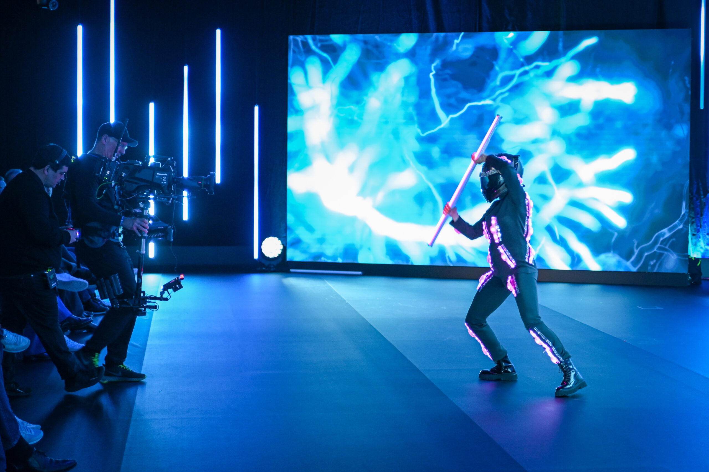

A kickoff that sets the tone for the year.
The platform kicks off annually with a hybrid event in which board members set the direction for the year ahead: priorities, goals, and development opportunities for the community. In 2024, artificial intelligence was the defining focus — the lens through which the year’s agenda was framed.
The brief: open the keynote with a show that serves not just as a spectacular entry point, but as an emotional prologue to the year, setting the tone before a single slide appears.
